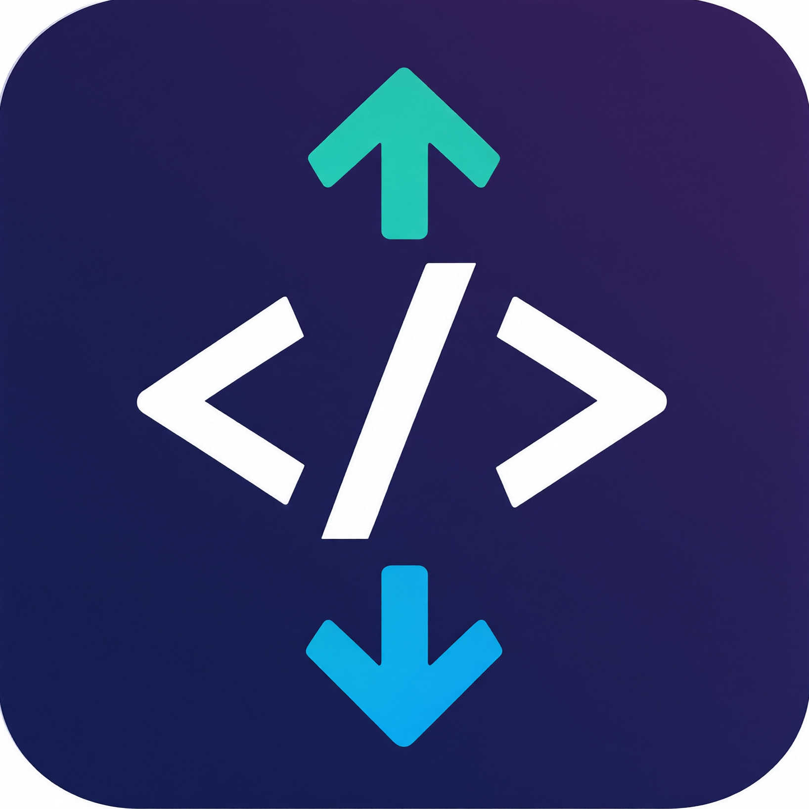
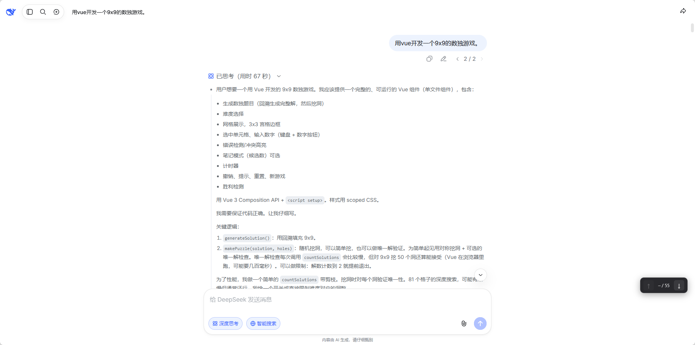

DeepSeek 代码块导航
Chrome / Edge 扩展在 DeepSeek 网页对话中一键跳转上一段 / 下一段代码块，免去反复滚动鼠标滚轮。
它做什么
DeepSeek 代码块导航是一个浏览器扩展，在 chat.deepseek.com 的对话页面右下角注入一个可拖拽的浮动导航条。它以代码块右上角的「复制」按钮作为锚点来识别和排序代码块，因此天然排除了用户输入、思考区等非代码内容。点击 ↑ / ↓ 即可在上一段和下一段代码块之间跳转，目标块会滚动到视口上方 25% 处，并做 1.5 秒蓝色高亮。
它是非官方扩展，与 DeepSeek 官方无关；不请求任何网络权限，不读取、不上传对话或代码内容，所有逻辑都在浏览器本地执行。
界面截图

截图来自仓库 assets/screenshot-1.png。
特性
- 复制按钮作为锚点 以代码块右上角的「复制」按钮识别和排序代码块，天然排除用户输入、思考区等噪声。
- 边界自动置灰 处于第一个代码块时「上一段」不可点，处于最后一个代码块时「下一段」不可点。
-
位置指示
显示当前处于第几个代码块，例如
3 / 12。 - 平滑滚动 + 高亮 目标代码块滚动到视口上方 25% 处，并做 1.5 秒蓝色高亮。
- 可拖拽浮动条 位置自由调整，不遮挡正文；按钮和拖拽区域分离，误触概率低。
-
零数据收集
不收集、不存储、不传输任何用户数据；不声明
storage、tabs、cookies等敏感权限。
安装（开发者模式）
- 下载或克隆仓库源码。
- 打开
chrome://extensions/（Edge 为edge://extensions/），开启「开发者模式」。 - 点击「加载已解压的扩展程序」，选择仓库的
src/目录。 - 打开 chat.deepseek.com 并进入含代码块的对话。
扩展只匹配 https://chat.deepseek.com/*，不会在其他页面运行。改动 src/content.js 后，在扩展管理页点击「重新加载」，刷新对话页面即可生效。
使用
页面右下角出现浮动导航条 [↑] 3 / 12 [↓]：
| 操作 | 效果 |
|---|---|
| 点击 ↑ | 跳转到上一段代码块 |
| 点击 ↓ | 跳转到下一段代码块 |
| 拖动空白处 | 移动导航条位置 |
开发与打包
# 生成扩展图标（需要 pillow）
python scripts/generate-icons.py
# Linux 打包到 dist/
./scripts/pack.shWindows 下的 PowerShell 打包命令见仓库 README。扩展无构建步骤，src/ 目录本身就是可加载的扩展。
已知限制
- 页面结构依赖：DeepSeek 页面改版可能导致复制按钮识别失败，此时会自动退化为
pre兜底。 - 流式生成回弹：流式生成期间点击跳转，页面若强制钉底，可能出现一次视觉回弹。
- 仅匹配一个站点：扩展只对
chat.deepseek.com生效，不覆盖其他 Web AI 页面。
隐私与边界
扩展不收集、不存储、不传输任何用户数据：不读取或上传对话与代码内容，不记录浏览历史，不使用 Cookie，不使用分析或埋点服务，不请求网络权限，不向第三方服务器发送数据。它只声明一项权限范围：https://chat.deepseek.com/*（content script 匹配范围），用于在该页面识别代码块并注入导航按钮。
本扩展为非官方项目，与 DeepSeek 官方无关。它不修改 DeepSeek 服务端，不绕过访问限制，也不替代 DeepSeek 自身的任何功能。详见 PRIVACY.md。